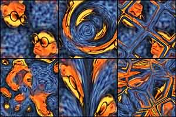

Distorts one texture with another.

Note that the Warp texture values can go over one and less than zero by using the Output rollout in various textures. Negative values will push in the opposite direction of positive values.
The "meaning" of this parameter changes depending on whether the Target texture is using UVW coordinates or XYZ coordinates.
1999.06.13 - Created. 2000.02.09 - Re-written. 2004.02.11 - Re-written again for the last damn time. 2004.02.23 - Few last touches for real release. 2007.02.20 - Updating for public 3dsmax9 release. 2008.04.05 - Updated to 64 bit and 3dsmax 2008. Thanks to David Baker for the help.
This software is provided 'as-is', without any express or implied warranty. In no event will the author be held liable for any damages arising from the use of this software. Permission is granted to anyone to use this software, subject to the following restrictions: 1. The origin of this software must NOT be misrepresented; you must not claim that you wrote the original software. 2. This software may NOT be bundled with any other product or included in any compilation without the express permission of the author. 3. This notice must NOT be removed or altered from any distribution of this software.